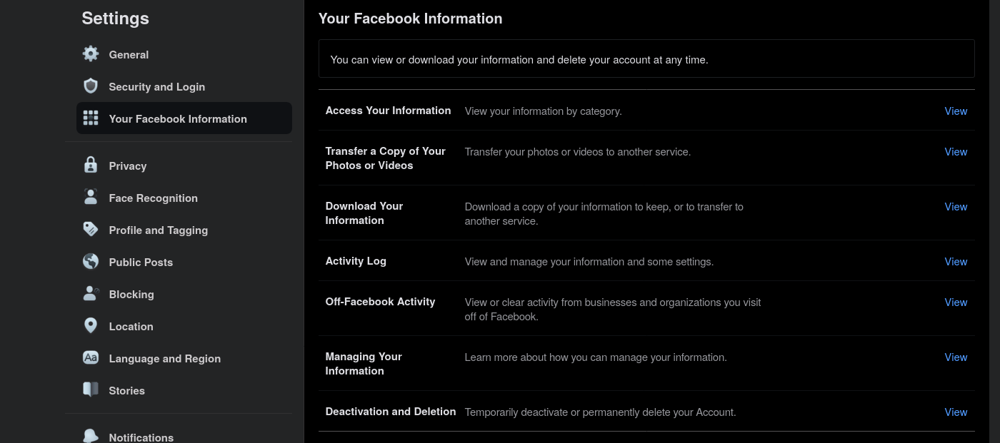

- Qu’est ce qu’un client / serveur ?
- Que sont les protocoles UDP / TCP / OSC ?
- Quelles topologies pour des installations en réseau ?
- Quelles possibilités pour faire de l’audio en ligne ?
Client / Server
Trajet d’un message Instagram / messenger, etc …

Architecture client-server VS peer-to-peer :

Modèle client-server :
- asymétrie de rôles
- le serveur est en attente
- les clients vont et viennent, envoyant des requêtes au serveur
Collection de données
Essayez de télécharger les données que Facebook stocke sur vous :

Protocoles TCP / UDP
TCP
- (+) permet d’assurer l’intégrité des messages transmis. Pas de perte
- (-) Pas le plus rapide
- (-) Messages peuvent arriver dans un ordre différent que celui dans lequel ils ont été envoyés
Utilisation : communication par WebSocket, chats, messages qui requierent une certaine fiabilité
UDP
- (+) Rapide
- (+) Messages arrivent toujours dans l’ordre d’envoi
- (-) Perte de packets
Utilisation : streaming, flux de controle
Numéros de ports
- Permet à plusieurs applications d’émettre / de recevoir sur le même hôte (et donc même addresse IP)
- Ports system : 0-1023,
- Ports utilisateurs : 1024-49151
- Ports dynamiques ou privés : 49152-65535
- IANA assignation des ports
- À quoi sont associés les ports 22, 80, 443 ? D’autres ports que vous reconnaissez ?
Le numéro de port peut être accolé à l’addresse IP ou au nom de domaine (notamment dans le navigateur Internet), en ajoutant :, suivis du numéro de port en question.
Exemples avec le port 9999 :
192.168.0.78:9999
178.17.98.3:9999
localhost:9999
mon-domaine-cheri.fr:9999
Protocoles pour applications créatives
Protocole midi
- MIDI : Musical Instrument Digital Interface
- Spécification publiée en 1981, standardisé en 1983
- Protocole de communication, connecteur, format de fichier
- inter-operabilité des instruments de musique, synthetiseurs, samplers, etc …

Protocole OSC
- OSC : Open Sound Control
- Protocole utilisé par de nombreuses applications de production visuelle / audio.
- Pour établir une connexion OSC :
- clients / serveur
- addresses IP
- ports
- protocole de transport sous-jacent (tcp, udp, … ?)
- format du message :
- addresse OSC, type
/boutons/nouvelleValeur
- arguments OSC, type
couleur 255.0 255.0 0.0
WebSockets
- echo server https://www.websocket.org/echo.html
- de plus en plus d’applications supportent ce protocole
Utilisation : en général pour connecter une page web avec d’autres pages web, ou avec une installation implémentée avec une autre technologie (e.g. Pure Data, …)
Typologies d’installations en réseau
Installations locales
Requis
- Nécessite un routeur, soit filaire, soir Wi-Fi
- Assignation d’addresses IP statiques pour les hôtes permanents du réseau (serveurs, installations, etc …)
- Utilisation d’un switch si nombreuses connexions cablées
En option
- Possibilité de mettre en place un serveur DNS sur le réseau local
- Possibilité (avec inconvénients), d’exposer un service local à l’Internet
- Possibilité de mettre en place un portail captif
Avantages / inconvenients
- (+) Utilisation en autonomie (dans un lieu sans Internet, ni même aucune infrastructure)
- (+) Pour une installation très simple, la seule chose nécessaire est un petit router Wi-Fi (coût ~20 euros)
- (-) Nombre de connexions limité :
- max ~30 sur le même point d’accès Wi-Fi
- max 254 sur l’ensemble du réseau local
- (-) Accès local uniquement
Murmurate / rhizome
Installation en Wi-Fi la plus simple

*
Installation en Wi-Fi pour une centaine de clients

*
Murmurate au festival Sanctuary, Forêt de Galloway, Écosse.

Installations en ligne
Requis
- Nécessite un serveur. Les prix varient :
- gratuit pour une page html simple
- ~15 euros / mois pour un serveur qui permettra l’utilisation par exemple de WebSocket.
- Nécessite une addresse IP fixe, ou un nom de domaine (~10 euros par an pour .com)
Avantages / inconvenients
- (+) Accessible depuis le monde entier
- (+) Pas (ou peu) de limites en terme de nombre de clients connectés simultanément
- (-) Potentiellement coûteux
- (-) Nécessite un accès Internet
Github pages
Github (une entreprise appartenant à Microsoft), propose un service gratuit pour servir du contenu statique (page html, images, sons, etc …). l’éspace est limité à 1Go. Pour le mettre en place :
Obtenir un nouveau repo
- Ouvrez un compte sur https://github.com
- Créez un nouveau repository. Il doit être public
Ajouter une page web au repo
- Cliquez sur “create a new file”
- Copiez / collez le code suivant dans l’éditeur de texte :
<!DOCTYPE html>
<html lang="fr">
<head>
<meta charset="utf-8" />
<meta name="viewport" content="width=device-width, initial-scale=1" />
<meta name="theme-color" content="#000000" />
<title>
TITRE DE LA PAGE
</title>
</head>
<body>
CONTENU DE LA PAGE
</body>
</html>
- Dans le champ “Nom de fichier”, entrez
index.html
- Descendez en bas de la page puis, cliquez sur “Commit new file”
Publiez la page web
- Dans la page principale de votre repo, cliquez sur “Settings”
- Descendez en bas de la page pour trouver la section “GitHub Pages”
- Dans la sous-section “source”, cliquez sur le dropdown qui dit “None”, selectionnez “main”, puis cliquez sur “Save”
- Retournez dans la section “GitHub Pages”, un bandeau devrait apparaître avec l’url à laquelle votre site est publié
Technologies pour l’audio en réseau
HTML5 Audio
- Simple lecture d’un fichier audio dans une page web
- Attention tous les navigateurs ne supportent pas tous les formats. Pour un support maximal, il est donc nécessaire de fournir plusieurs encodages. Plus d’informations sur MDN
Ajouter de l’audio à une page HTML (un seul encodage)
- Prenez un fichier son au format mp3 ou ogg.
- Copiez / collez le code suivant dans l’éditeur de texte, placez le après la balise html
<body> et avant la balise correspondante de fermeture </body> :
<audio controls>
<source src="monAudio.mp3" type="audio/mpeg">
</audio>
Web Audio API
- environnement complet de synthèse sonore dans le navigateur
- programmation avec JavaScript
- Accès au midi avec Web Midi
Examples
- http://sebpiq.github.io/paulstretch.js/examples/expendable-music/dist/index.html
- https://github.com/sebpiq/WebPd
- http://cuinjune-purr-data.glitch.me/
Streaming
Nécessite :
- un serveur de streaming. La référence est icecast
- un client source qui va envoyer l’audio au serveur icecast
- un client recepteur qui va se connecter pour écouter le stream audio

Examples
Radio Garden, une carte avec plein de streams radio du monde entier http://radio.garden
Le site d’icecast contient un répertoire de streams (web radios et autres). Example Goa psytrance https://amoris.sknt.ru/goa.mp3
- Ouvrez le stream avec VLC “Media > Open Network Stream”
- Créez une balise html audio avec en source l’url du stream
References
- Rhizome - network topologies https://github.com/sebpiq/funktion.fm/blob/master/templates/posts/network-topologies.md